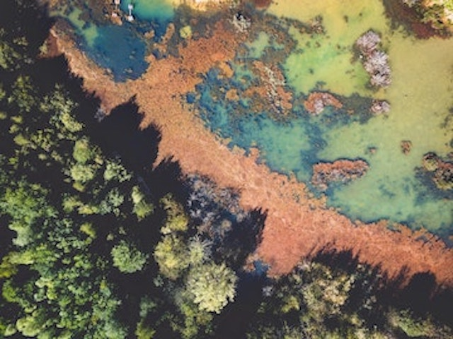

Pollution news in Boston–Harbor, Chinatown, river, lake, ocean
- Pollution news in Boston–Harbor, Chinatown, river, lake, ocean
- Environmental justice related items
- Asian involvement in environmental justice resources
- Contact Me
- Donate
- Home

|
|
|
The WTO's Environmental Database (EDB) |
environmental databases |
|
The WTO's Environmental Database (EDB) contains all environment-related notifications submitted by WTO members as well as environmental measures and policies mentioned in the Trade Policy Reviews of WTO members. |
These slides explain about the problems of environmental databases. |
|  | |
|
The Best Environmental Blogs in the World |
amazing environmental blogs |
|
Environmental blogs come in many shapes and sizes. In this post, we’ve pulled the best of them together for you. We think this is the most interesting collection of green blogs on the internet. Over 70 of them across a range of fields and approaches to do with the environment and sustainability. |
Environmental blogs are platforms offering great ways to create awareness about various environmental issues including pollution and aspects about building a green community. The most vital and beautiful thing about blogs is that it has a wide outreach, reaching millions of people across the globe. |

|
|
|
100 Best Environmental Blogs and Websites |
|
|
The best Environment blog list curated from thousands of blogs on the web and ranked by traffic, social media followers, domain authority & freshness. |
|